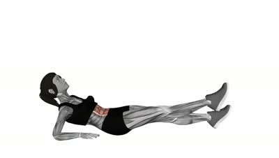
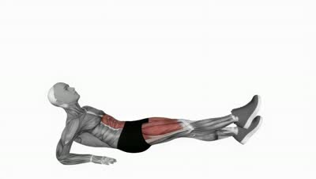

Alternate Leg Raise From Reverse Plank Position
ea_alternate_leg_raise_from_reverse_plank_position
confirmed findings (1)
-
FORCED_ROM
unqualified max-ROM cue
Unqualified maximum-range cue may push a user beyond the range they can control without symptoms or compensation.
Unqualified ROM cue: "...maximum range while keeping them straight"
current Purpose / Steps
[not written -- H3 pending]
- Lie down on your hips with your arms resting on the floor by your side and your legs extended forward
- Raise your upper back, bring your elbows under the shoulders, and bear weight on your forearms with your palms down
- Alternately raise and lower your legs to your maximum range while keeping them straight